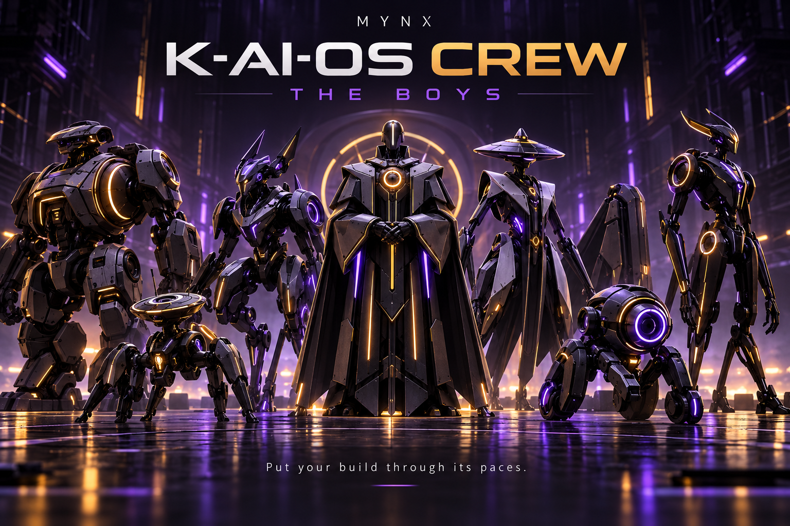

JOSHUA HALE / MYNX INTELLIGENCE
The storm before
the calm.
Meet the Boys: a separate local testing crew that puts selected web builds through evidence-based checks.
Try it here ↓Windows edition
FREE BROWSER DEMO / HTML STRUCTURE CHECK
Give the Boys a page to inspect.
Paste HTML or load the deliberately imperfect sample. This demo checks structure locally using your browser. It does not execute pasted scripts, fetch a website, follow links or measure network speed. No content is uploaded or saved.
Waiting for a page.
Only document title, language, H1, viewport, image alternatives and input labels are checked here. The local Windows crew adds actual GET requests and route/header/timing evidence. Neither edition certifies security or replaces usability testing with people.Meet the crew.
Rookie Journey looks for a clear introduction and next action. Path Runner follows same-origin links. Door Kicker tries bounded GET probes. Access Scout checks document structure. Privacy Hound checks headers and disclosure signals. Speed Rat records response time and size. The Referee consolidates findings.
These are specialist software checks with distinct roles. This release does not use seven independent language models or simulate human testers.LOCAL WINDOWS EDITION / RELEASE PREPARATION
Keep the work on your computer.
A customer package is being prepared. Paid checkout is unavailable right now; there is no purchase or download button pretending otherwise.
Ask about the Windows release ↗Windows x64 runtime; Windows ARM64 needs x64 emulation. Customer setup verification is in progress.Part of something bigger.
Rook and K-AI-OS belong to Joshua’s wider ecosystem of local operators, production tools, apps and infrastructure. Meet Nova, then explore what fits your work.
Meet Nova ↗ · The whole ecosystem ↗